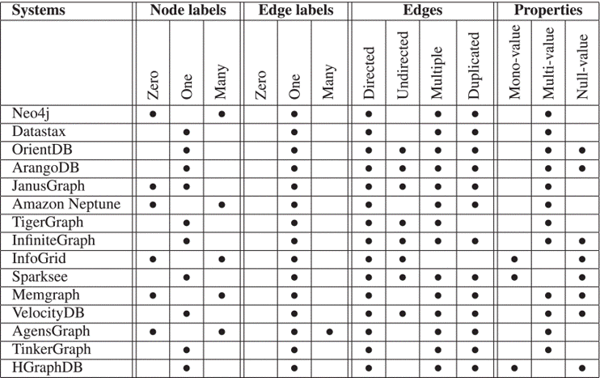

Connect URL: bolt://localhost:7687
Authentication: Username / Password
Username: neo4j
Password: our_password_v1
Click connect.
Use Neo4j Sandbox for a cloud-hosted instance (requires a free account).
Note: Create an account and log in. Then, enter the credentials that were downloaded automatically while the sandbox was created. Start the sandbox.
If we do not want to create an account, we can setup Neo4j using
Docker.
ATTENTION: This requires Docker to be installed on
our machine. If we do not have it yet, follow this
Step-by-Step Docker Installation Guide.
Open terminal (Terminal on macOS/Linux, PowerShell on Windows) and run the appropriate command:
docker run --name neo4j-demo -p 7474:7474 -p 7687:7687 -d -e NEO4J_AUTH=neo4j/our_password_v1 neo4j:latest
or install a specific version
docker run --name neo4j-demo -p 7474:7474 -p 7687:7687 -d -e NEO4J_AUTH=neo4j/our_password_v1 neo4j:2026.02.2
Once the container is up running, access the interface:
Note: If prompted for credentials, type the given username and password.
We have prepared a Java application that sets up Neo4j DB on the machine. Download the jar file from our GitHub page. Open a terminal and execute the following command to run the application:
java -jar neo4j-demo-0.0.1.jar
Nodes are defined using parentheses:
() or (:Pokemon) or or (p1:Pokemon)
Edges are defined using square brackets:
[] or [:BATTLES] or [rel:BATTLES]
Nodes and edges are connected by dashes and the lesser/greater sign:
(a)-[:BATTLES]->(b) or (a)<-[:BATTLES]-(b)
Edge Direction: The "-" denotes the
outgoing edge direction and the "->" denotes the
incoming edge direction. In Cypher, we MUST specify a direction
using -> or <- when
creating a relationship. However, when
querying, we can omit the arrowhead (e.g.,
(n)-[:BATTLES]-(m)) to find connections in either
direction.
Nodes and edges can have multiple labels (each starting with a colon), e.g.:
(p1:Pokemon:Electric:Starter {identifier:'pikachu'})-[:BATTLES]->(p2:Pokemon:Grass {identifier:'bulbasaur'})
As depicted in Figure 1, in Neo4j nodes can have multiple labels (e.g., Pokémon, Electric, Starter), but edges have only one type. There is no order for writing the labels in a Cypher query - important information is: either there is a label or not. Labels help to group the nodes (view sub-data-graphs). Using multiple labels will create an intersection of the data graph nodes.
Properties on nodes and edges are defined using curly brackets:
(p1:Pokemon {identifier:'pikachu', type:'electric', level:25})-[:BATTLES {result:'win', location:'Kanto'}]->(p2:Pokemon {identifier:'bulbasaur', type:'grass'})
Properties are key-value pairs that describe nodes and edges. Keys must be strings, while values can be Strings, Integers, Floats, or Booleans. Allowed characters for keys include alphabets, numbers, and underscores (starting with a letter).
Write data using CREATE:
CREATE (p:Pokemon {identifier: 'myPokemon', type: 'fire'});
CREATE (n:Label)-[r:TYPE]->(m:Label)
Read data using MATCH:
MATCH (p:Pokemon) RETURN p;
=> returns all nodes with the label "Pokemon".
MATCH (p:Pokemon) RETURN p.identifier LIMIT 25;
=> returns the "identifier" property of 25 nodes with the label "Pokemon".
MATCH (p:Pokemon) WHERE p.identifier = "pikachu" RETURN p;
=> returns the Pokémon node with the identifier "pikachu" (FILTERING).
Update data using SET:
MATCH (p:Pokemon) WHERE p.identifier = "myPokemon" SET p.identifier = "myNewPokemon";
With MERGE find (if exists) or create
a pattern:
MATCH
(a:Pokemon {identifier: $value1}),
(b:Pokemon {identifier: $value2})
MERGE (a)-[r:BATTLES]->(b)
Delete data using DELETE or
REMOVE:
MATCH (p1:Pokemon)-[r:evolves_to]-(p2:Pokemon) WHERE r.trigger= 'use_item' DELETE r
MATCH (n:Pokemon) WHERE n.identifier = "eevee" DETACH DELETE n;
=> deletes the node with all its relationships. Without
DETACH an error will be thrown if
the given node is attached to more than one relationship.
MATCH (n:Label) WHERE n.id = 123 REMOVE n.color
REMOVE helps delete a property from
a node or an edge.
Read more in: Open Official Manual and Cypher Cheat Sheet.
Apart from the basic Neo4j commands, there are many other possibilities to use functions or add custom functions extending the built-in functions to play more with the data - depending on the specific usecase. Read more about Functions, Graph Algorithms and APOC Library.
Read more about Path and Graph Pattern definitions.
Let's see what do we have in the DB, we created:
MATCH (n) RETURN n;
The DB is empty upon creation --> no surprises!
Now let's create our first entry in DB:
CREATE ();
If we now see what do we have in the DB, we can observe that the previous command only inserted an empty node without a label or any content. A rather not interesting or useful node ^^ so, now let's create interesting nodes.
Neo4j provides the opportunity to view the content of the
database (RETURN keyword is used),
in following different formats:
CRUD-based operationsCreate a node with the label Student whose first name and last name is Max Mustermann respectively.
CREATE (s:Student {firstname: 'Max', lastname: 'Mustermann'}) RETURN s;
Create a Professor node. The professor's first name is Martina and the last name is Musterfrau.
CREATE (p:Professor {firstname: 'Martina', lastname: 'Musterfrau'}) RETURN p;
Add the information that Max Mustermann's matriculation number is 12015896.
MATCH (s:Student {firstname: 'Max', lastname: 'Mustermann'}) SET s.matrNr = '12015896';
Get Student nodes with the first name: Max.
MATCH (s:Student) WHERE s.firstname = 'Max' RETURN s;
Now we know that Professor Martina teaches a Course with the topic GraphDBs.
MATCH
(p:Professor {firstname: 'Martina', lastname: 'Musterfrau'}),
(c:Course {topic: 'GraphDBs'})
MERGE (p)-[r:TEACHES]->(c);
Search for any nodes that are not Student.
MATCH (n) WHERE NOT n:Student RETURN n;
List the current node labels in the database.
MATCH (n) RETURN labels(n);
Display the node labels count in an ascending order.
MATCH (n) RETURN size(labels(n)) as count ORDER BY count ASC;
Remove the empty node, which we first inserted in the DB.
MATCH (n) WHERE size(labels(n))=0 DELETE n;
We use DELETE only when we are 100% sure we want to delete the node(s). In productive environment, we use the query with RETURN and then if we are happy with the result of the query, use the DELETE to get rid of the node(s).
WITH keywordObviously, Students attend Courses. So, a student Jane Doe attends the GraphDBs and recieves a grade for it - the default grade before the exam is 0. Add this information to the database.
CREATE (s:Student {firstname: 'Jane', lastname: 'Doe'})
WITH s
MATCH (c:Course {topic: 'Grpah Databases'})
CREATE (s)-[:ATTENDS {grade: 0}]->(c)
RETURN *
The WITH keyword allows us to chain query parts together. It acts as a boundary: only the variables we specify are "passed through" to the next part of the query and they are available in the remainder of the query.
However, if the course does not exist, the entire query stops and
the relationship will not be created, even though the student node
was created in the first line.
Attention:
notice the difference between the following two queries, where the
first one executes successfully and the second one leads to an
error:
MATCH (n:Student) WITH n as student WHERE student.firstname = 'Jane' MATCH (student)-[:ATTENDS]-(c:Course) RETURN c
MATCH (s:Student)-[:ATTENDS]->(c:Course) WITH s as student WHERE student.firstname = 'Jane' RETURN c
If we add the c after the
WITH keyword, its scope of the life gets
extended, and then we get no error.
John Doe also attends the course GraphDBs.
MERGE (s:Student {firstname:'John', lastname: 'Doe'})
WITH s
MERGE (c:Course {topic: 'GraphDBs'})
WITH s, c
MERGE (s)-[:ATTENDS {grade: 0}]->(c)
RETURN s, c;
The following query would not be desirable:
MERGE (s:Student {firstname:'John2', lastname: 'Doe'})-[:ATTENDS {grade: 0}]->(c:Course {topic: 'GraphDBs'})
RETURN s, c;
There are two 'GraphDBs' courses. One listened by John and the other by John2. This is because the DB engine tries to find a student named John2 and a course with the topic GraphDBs and these two nodes have to have an edge that connects them. Since this does not exist, it creates both nodes and the edge between them altogether.
Jane Doe graduated. So, remove the node from the database.
MATCH (s:Student {firstname:'Jane', lastname: 'Doe'})
DELETE s;
The error indicates that the node has edges and thus, we are
not able to delete it. To delete a node with edges, we first
detach the node and then delete it safely. Use the keyword
DETACH for this mean.
MATCH (s:Student {firstname:'Jane', lastname: 'Doe'})
DETACH DELETE s;
Delete the matriculation number of Max Mustermann.
MATCH (s:Student {firstname:'Max', lastname: 'Mustermann'})
REMOVE s.matrNr;
John Doe provides us with an email as his contact and Max
Mustermann only his phone number. Insert these properties to the
student's node. For a notification system, we want to query whatever
contact method is available. If the property yields
null, inform that there is no contact info for the
student available.
MATCH (s1:Student {firstname:'John', lastname: 'Doe'})
SET s1.email = "john.doe@example.com"
MATCH (s2:Student {firstname:'Max', lastname: 'Mustermann'})
SET s2.phone = "0666 000 000 00"
MATCH (s:Student)
RETURN s.firstname + " " + s.lastName AS name, coalesce(s.email, s.phone, "No contact info") AS contact_method
// or
// MATCH (s:Student)
// RETURN coalesce(s.firstname, "") + " " + coalesce(s.lastName, "") AS name, coalesce(s.email, s.phone, "No contact info") AS contact_method
coalesce() is a scalar function,
that returns the first no-null value in a list of expression.
The command above works only for the application
Discover the nodes available in the database.
MATCH (n) RETURN n;
In large databases, the command is used with
LIMIT keyword, otherwise it is a heavy process. Neo4j
uses 25 as a default value for the LIMIT.
MATCH (n) RETURN n LIMIT 25;
Discover nodes with (a) specific label(s).
MATCH (p:Pokemon) RETURN p LIMIT 25;
MATCH (t:Type) RETURN t;
MATCH (p:Pokemon), (t:Type) RETURN p, t LIMIT 25;
Toggle between views (graph or table) on the Neo4j browser to see if more information is visible.
MATCH (n) WHERE (n:Pokemon) or (n:Type) RETURN n LIMIT 25;
Discover nodes and edges in the database.
MATCH (p:Pokemon)-[:HAS_TYPE]-(t:Type) RETURN * LIMIT 25;
Same as SQL, the * gives us everything that is saved
in a variable. In this case, the edge is not stored in a variable,
so it is not returned by the *. However, since the
p and t are stored, the browser returns
the edges too.
Discover nodes with multiple labels.
MATCH (p:Pokemon:Legendary) RETURN p;
The command yields the same result as:
MATCH (p:Legendary) RETURN p;
Discover nodes that have specific property value (= Filtering).
MATCH (p:Pokemon) WHERE p.identifier = 'pikachu' RETURN p;
The command yields the same result as:
MATCH (p:Pokemon {identifier: 'pikachu'}) RETURN p;
We can also filter using functions and boolean expression combinations.
MATCH (p:Pokemon) WHERE p.identifier STARTS WITH 'pi' RETURN p;
MATCH (p:Pokemon) WHERE p.identifier STARTS WITH 'pi' OR p.identifier = 'bulbasaur' RETURN p;
MATCH (p:Pokemon) WHERE p.identifier STARTS WITH 'pi' AND p.id <= 150 RETURN p;
We can also filter using paths. Let us, for instance, query the fire Pokémon where their id is less or equal to 150.
MATCH (p:Pokemon)-[:HAS_TYPE]-(:Type {identifier: 'fire'})
WHERE p.id <= 150
RETURN *;
Since we did not assign a variable to the
:Type, we could use * to only get the
Pokémon nodes.
Nodes can have multiple (incoming/outgoing) edges of the same type; they differ in edge property then. Mapped to the Pokémon world, Pokémon might have more than one type. So, we could query all fire Pokémon that have fire as secondary type.
MATCH (p:Pokemon)-[:HAS_TYPE {slot: 2}]-(:Type {name: 'fire'}) RETURN *;
In Neo4j, an index is a redundant data structure that
allows the engine to find "entry points" into the graph without
scanning every single node. Similar to an index at the back of a
textbook: instead of reading every page to find Pikachu, we look at
the index, find the page number, and jump straight there.
CREATE INDEX: When we create an index on a specific Label and
Property, Neo4j builds a B-Tree (or similar structure)
that maps property values to internal node IDs. E.g.,
CREATE INDEX pokemon_identifier_index IF NOT EXISTS
FOR (p:Pokemon) ON (p.identifier);
// For evaluating the following query, the DB engine then uses the index
MATCH (p:Pokemon {identifier: 'mewtwo'})
RETURN p;
If we have, for example, 10,000 Pokémon. Finding one by
identifier without an index requires a
NodeByLabelScan (checking all 10,000). With index,
the DB engine looks at the "identifier" index, finds the ID for
'mewtwo', and performs a NodeIndexSeek.
A composite index example:
CREATE INDEX student_name_index IF NOT EXISTS
FOR (s:Student) ON (s.firstname, s.lastname);
// Optimized for:
MATCH (s:Student {firstname: 'Max', lastname: 'Mustermann'})
RETURN s;
An index on a relationship: If we have millions of battles, finding a battle that occurred on a specific date is slow if we have to check every relationship.
CREATE INDEX battle_date_index IF NOT EXISTS
FOR ()-[r:BATTLES]-() ON (r.date);
MATCH ()-[r:BATTLES {date: '2026-04-01'}]-()
RETURN r;
// or for properties that often store "weights", "scores" or "distances"
CREATE INDEX move_damage_index IF NOT EXISTS
FOR ()-[r:USED]-() ON (r.damage);
MATCH (p:Pokemon)-[r:USED]->(m:Move)
WHERE r.damage > 100
RETURN p.name, m.name, r.damage;
SHOW/DROP INDEX: We can see which indexes we have in DB and if we do not need one,
we can delete them. E.g.,
SHOW INDEXES YIELD *;
DROP INDEX pokemon_identifier_index;
To ensure quality and integrity in data graph, we can use
CONSTRAINT. In Neo4j, we can set constraints that
ensure uniqueness of properties, existence of specific properties,
or restrict the type of a property. Note: the latter two are
features of Enterprise Edition of Neo4j, which does not work
on our demo applicaiton (= Community Verison).
CREATE CONSTRAINT: We can create constraints for uniqueness of properties of
Nodes and Edges. E.g.,
CREATE CONSTRAINT constraint_name FOR (n:Label) REQUIRE n.property IS UNIQUE; CREATE CONSTRAINT constraint_name FOR ()-[r:REL_TYPE]-() REQUIRE r.property IS UNIQUE;
SHOW/DROP CONSTRAINT: We can check if there are any contraints and upon wish delete
them. E.g.,
SHOW CONSTRAINTS YIELD *; DROP CONSTRAINT constraint_name;
We can store complete path into variables. The simplest queries are
those that begin with a node and end with a node. E.g.,
MATCH p=()-[*]->() RETURN p LIMIT 10;. This gives rise
to patterns. Graph patterns describe the structural shape of the
data we are searching for. These patterns help us check if a certain
path exists or is absent in the database. In our example, we know
that some Pokémon do not evolve. Let us check which Pokémon meet
this pattern.
MATCH (p:Pokemon)-[:BELONGS_TO_SPECIES]->(s:PokemonSpecies) WHERE NOT (s)-[:EVOLVES_FROM]-() RETURN p.identifier AS pokemonName LIMIT 25;
The () stands for arbitrary node
(we do not want to restrict in any way).
However, paths can alternate between nodes and edges, e.g.,
(:Station)-[:CALLS_AT|:ARRIVES_AT]-(m WHERE m.departs >
time('12:00'))-[:!A&!B]-(:Stop)-[:NEXT]->(n:Stop). Thus, paths can have arbitrary complex patterns.
Chains: We might, for example, want to find all Pokémon that have only two evolution states:
MATCH chain = (s1:PokemonSpecies)-[:EVOLVES_FROM]->(s2:PokemonSpecies) WHERE NOT ()-[:EVOLVES_FROM]->(s1) AND NOT (s2)-[:EVOLVES_FROM]->() MATCH (p:Pokemon)-[:BELONGS_TO_SPECIES]->(s) WHERE s = s1 OR s = s2 RETURN p.identifier AS pokemonName, chain;
The query result gives us the start and end node (denoted as
such) and also everything inbetween (as segments).
Note: The
EVOLVES_FROM is a relationship
which connects nodes of the same type (PokemonSpecies)
and this fact technically indicates a recursion. A recursion
can be a chain of variable length or a closed loop from a node
to the node itself (=cycle); this does not apply for Pokèmon
example, because no Pokèmon evolves to itself in the last
stage.
For Pokèmon with three evolutionary levels (final evolutions of 3-stage chains), we can query as following:
MATCH path=(s1:PokemonSpecies)-[:EVOLVES_FROM]->(s2:PokemonSpecies)-[:EVOLVES_FROM]->(s3:PokemonSpecies) WHERE NOT ()-[:EVOLVES_FROM]->(s1) AND NOT (s3)-[:EVOLVES_FROM]->() MATCH (p:Pokemon)-[:BELONGS_TO_SPECIES]->(s3) RETURN p.identifier AS LastEvolution, length(path) AS Levels;
In Cypher, length(path) counts the relationships
or the edges (the arrows). To return the number of the nodes
use nodes(path).
The results are the same with following query:
MATCH path = (s1:PokemonSpecies)-[:EVOLVES_FROM*2]->(s3:PokemonSpecies) WHERE NOT ()-[:EVOLVES_FROM]->(s1) AND NOT (s3)-[:EVOLVES_FROM]->() MATCH (p:Pokemon)-[:BELONGS_TO_SPECIES]->(s3) RETURN p.identifier AS LastEvolution, length(path) AS Levels ORDER BY Levels ASC;
Syntax description:
[*]: One or more iterations.[:REL*]: Infinite depth or arbitrary repeated
number of REL edge (attention: can cause memory issues on
large graphs!).
[:REL*3]: Exactly 3 hops.[:REL*min..max]: The * denotes a recursive
relationship, "min" denotes the lower bound of the range
and "max" the upper bound. The .. denotes a range. So, it
means between min and max iterations. E.g.,
[:REL*1..3]: Between 1 (lower boundary) and 3
(upper boundary) hops.
[:REL*0..]: Includes the starting node itself
and the empty upper bound means no limit. The query will
follow the chain until it hits a leaf node (0 or more
iterations).
[:REL*..3]: Up to 3 hops (between 1 and 3
iterations)
[:REL*0..n]: Between 0 and n iterations.
Variable Length Paths / Cycles: Cycles can
occur if there is a circular dependency (or e.g., in money
laundering).
(a)->(b)->(c)->(a)
OR
(a)->(b)->(c)->(d)->(a)
MATCH p = (n)-[*1..5]->(n) RETURN p
Though cycles cannot not occur in Pokèmon example, however, variable length paths (paths of unknown depth) exist. We can restrict the depth as following. E.g., we can find all evolutions of Charmander, between 1 and 3 hops away:
MATCH (p1:Pokemon {identifier: 'charmander'})-[:BELONGS_TO_SPECIES]->(s1:PokemonSpecies)
MATCH (s1)-[:EVOLVES_FROM*1..3]->(s2:PokemonSpecies)
MATCH (evolution:Pokemon)-[:BELONGS_TO_SPECIES]->(s2)
RETURN p1.identifier AS Base, evolution.identifier AS Evolution
In Neo4j 5 or above the following syntax is also correct
(using quantifiers):
MATCH (p1:Pokemon {identifier: 'pikachu'})-[:BELONGS_TO_SPECIES]->(s1:PokemonSpecies)
MATCH p = (s1)-[:EVOLVES_FROM]->{1,3}(s2:PokemonSpecies)
MATCH (evolution:Pokemon {isDefault: true})-[:BELONGS_TO_SPECIES]->(s2)
RETURN [n IN nodes(p) | n.id] AS speciesPath, evolution.identifier AS evolutionName;
Usage: best for repeating a
specific edge type where the nodes in
between do not need special filtering. If by chance we add
a filtering for the evolution node, the filtering
would only apply to the final found node in the path and
not to the intermediate nodes. Note: the
| denotes a pipe operator. Syntax for usage:
[ variable IN original_list | transformation ]
The following is also a valid query. For example, we can search for a Generation 1 Pokémon that evolves (1 to 3 times) into a Pokémon that can learn "Solar Beam".
MATCH (g:Generation {id: 1})<-[:BELONGS_TO_GEN]-(baseSpecies:PokemonSpecies)
MATCH ((baseSpecies)-[:EVOLVES_FROM]->(evolvedSpecies:PokemonSpecies)){1,3}
MATCH (evolvedPoke:Pokemon)-[:BELONGS_TO_SPECIES]->(evolvedSpecies)
MATCH (evolvedPoke)-[:CAN_LEARN]->(:PokemonMove)-[:IS_MOVE]->(m:Move {name: 'Solar Beam'})
RETURN DISTINCT baseSpecies.name as Starter, evolvedPoke.identifier as FinalForm, m.power as PowerLevel
Difference with the former query: the repeating targets
the
entire pattern segment
"()-[:EVOLVES_FROM]->()". Here we are able to
add further filtering (a
((:Pokemon)-[:EVOLVES_FROM]->(evo:Pokemon WHERE
evo.baseExperience > 50)){1,3}.
Diamond Shape: Find pairs of Pokémon that share at least two specific types in common.
MATCH (p1:Pokemon)-[:HAS_TYPE]->(t1:Type), (p1)-[:HAS_TYPE]->(t2:Type), (p2:Pokemon)-[:HAS_TYPE]->(t1), (p2)-[:HAS_TYPE]->(t2) WHERE id(p1) < id(p2) AND t1 <> t2 RETURN p1.identifier, p2.identifier, t1.identifier, t2.identifier
This pattern forces the graph engine to find two different
Pokémon nodes that both point to the same two Type nodes. The
id(p1) < id(p2) check is a standard trick to
avoid returning the same pair twice (e.g., Pikachu/Pachirisu
and Pachirisu/Pikachu).
"V" Shape: Visually, it has a "V" form. It can also be seen as a sandwich pattern. It occurs when two nodes share a common neighbor but are not connected to each other through any other path. The structure would be:
(node1)-[:EDGE]->(neighbor)<-[:EDGE]-(node2)
Good for recommendation systems or suggesting friends for example. When X likes a Friend and Y likes the same Friend, and we know at some point that X connects with Z, so we can recommand Y to also connect with Z. Or similarity prediction is also possible: if Pokèmon X has a specific Ability and Pokèmon Y has the same Ability, they may be similar.
Shortest Path: we might want to find the fastest way to get from a specific Pokémon to a specific Move or Type, traversing through other Pokémon and their shared attributes:
MATCH (p:Pokemon {identifier: 'pikachu'}), (m:Move {name: 'Solar Beam'})
MATCH path = shortestPath((p)-[*]-(m))
RETURN path, length(path) AS distance
Note: when using shortestPath function, the
Neo4j browser, in some cases (memory issues in large graphs),
might notify and ask to provide an upper bound for the
relationship: shortestPath((p)-[REL*..3]-(m))
There is also the possibility to query the
SHORTEST k paths along the evolution path where k
is the number of paths to match. E.g.,
MATCH p = SHORTEST 1 (s1:PokemonSpecies)-[:EVOLVES_FROM]-+(sk:PokemonSpecies) WHERE s1.name = "Pichu" AND sk.name = "Raichu" RETURN p, length(p) AS evolution_steps, [n in nodes(p) | n.name] AS evolutions
The absence of arrowhead < or
> represents the fact that Pokèmon can evolve in
both directions along the
EVOLVE_FROM relationships. The
+ quantifier means that one or more relationships
should be matched.
EX1: Find all movies released between 1990 and 2000. Return their title and released year, sorted from the newest to the oldest.
EX2: Find all people who acted in the movie "The Matrix". Return their name and the roles they played.
EX3: Identify all people who have acted in a movie with "Tom Hanks". Return a distinct list of their names.
EX4: Find people who directed a movie and also acted in that same movie. Return their name and the movie title.
EX5: Find the shortest path of any relationship type between "Keanu Reeves" and "Kevin Bacon".